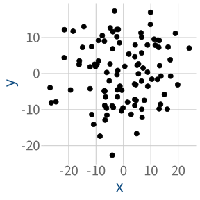
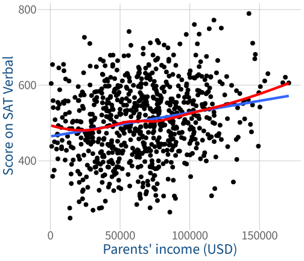
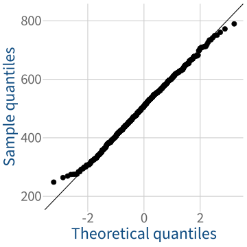
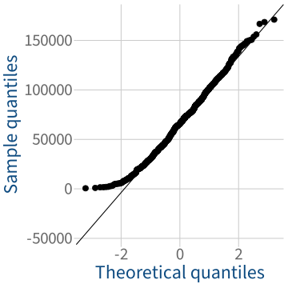
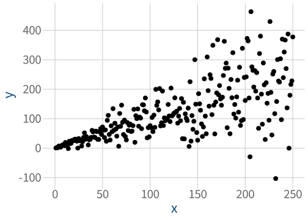
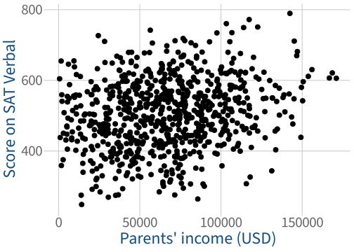

Correlations
Data Analysis for Psychology in R 1 (2026/27)
Where we are in the Block 3 plan

We measure correlation using a
“correlation coefficient” between –1 and 1
Not correlated:

For uncorrelated variables, the correlation coefficient will be close to zero.
Positively correlated:

For positively correlated variables, the correlation coefficient will be between 0 and 1 (that is, positive).
Negatively correlated:

For negatively correlated variables, the correlation coefficient will be between –1 and 0 (that is, negative).
Plotting continuous/continuous correlations
ses_data |>
ggplot(aes(x = Income, y = Score)) +
geom_point() +
labs(
x = "Parents' income (USD)",
y = 'Score on SAT Verbal'
)
Run the test
Instead of cor(), use cor.test():
cor.test(ses_data$Income, ses_data$Score)
Pearson's product-moment correlation
data: ses_data$Income and ses_data$Score
t = 6, df = 755, p-value = 2e-09
alternative hypothesis: true correlation is not equal to 0
95 percent confidence interval:
0.147 0.283
sample estimates:
cor
0.216 Can we reject the H0 that income and test score are uncorrelated?


Data requirements for Pearson’s correlation (1)
Both variables are continuous.
Review your dataset:
glimpse(ses_data)Rows: 757
Columns: 2
$ Income <dbl> 85169, 55967, 92710, 5082, 50710, 92163, 45017, 35973, 41832, 7~
$ Score <dbl> 624, 679, 426, 471, 556, 540, 535, 391, 421, 680, 437, 425, 453~Are you satisfied that this requirement is met?
Data requirements for Pearson’s correlation (2)
Data contains no extreme outliers.
Plot the data and look for any data points that are far away from the others.
Code
ses_data |>
ggplot(aes(x = Income, y = Score)) +
geom_point(size = 3) +
labs(
x = "Parents' income (USD)",
y = 'Score on SAT Verbal'
)
Are you satisfied that this requirement is met?
Assumption of linearity for Pearson’s correlation
The association between the variables is sufficiently linear.
Plot the data with two geom_smooth()s, and you want them to closely match:
- one with
method = 'lm'(the straight line) - one with
method = 'loess'(LOcally Estimated Scatterplot Smoothing, a wobbly line)
ses_data |>
ggplot(aes(x = Income, y = Score)) +
geom_point) +
labs(
x = "Parents' income (USD)",
y = 'Score on SAT Verbal'
) +
geom_smooth(
method = 'lm',
se = FALSE
) +
geom_smooth(
method = 'loess',
se = FALSE,
colour = 'red'
)
Are you satisfied that this assumption is met?
Assumption of normality for
Pearson’s correlation (1): Score
Both variables are normally distributed.
First let’s look at Score:
Code
ses_data |>
ggplot(aes(sample = Score)) +
geom_qq(size = 3) +
geom_qq_line() +
labs(
x = "Theoretical quantiles",
y = 'Sample quantiles'
)
shapiro.test(ses_data$Score)
Shapiro-Wilk normality test
data: ses_data$Score
W = 1, p-value = 0.3Are you satisfied that this assumption is met for Score?
Assumption of normality for
Pearson’s correlation (2): Income
Both variables are normally distributed.
Now let’s look at Income:
Code
ses_data |>
ggplot(aes(sample = Income)) +
geom_qq(size = 3) +
geom_qq_line() +
labs(
x = "Theoretical quantiles",
y = 'Sample quantiles'
)
shapiro.test(ses_data$Income)
Shapiro-Wilk normality test
data: ses_data$Income
W = 1, p-value = 0.00001Are you satisfied that this assumption is met for Income?
Assumption of equal variance for
Pearson’s correlation
Each variable’s variance is equal across the range of the other variable.
Plot the data and look for a fairly uniform cloud of data points.
Made-up data with very unequal variance:
Code
n_obs <- 250
set.seed(1)
tibble(
x = 1:n_obs,
error = 1/2*x,
y = rnorm(n = n_obs, mean = 0 + x, sd = error)
) |>
ggplot(aes(x = x, y = y)) +
geom_point(size = 3)
Our ses_data:
Code
ses_data |>
ggplot(aes(x = Income, y = Score)) +
geom_point(size = 3) +
labs(
x = "Parents' income (USD)",
y = 'Score on SAT Verbal'
)
Are you satisfied that this assumption is met?
Run the test in R
We can use cor.test() again. We’ll just change the type of correlation by adding method = 'spearman':
cor.test(
ses_data$Income,
ses_data$Score,
method = 'spearman'
)
Spearman's rank correlation rho
data: ses_data$Income and ses_data$Score
S = 57826912, p-value = 3e-08
alternative hypothesis: true rho is not equal to 0
sample estimates:
rho
0.2 Can we reject the H0 that Income and SAT score are uncorrelated?
Data requirements for Spearman’s correlation
Both variables represent rankings/orderings.
Review your dataset.
Can each variable be sorted into a sensible order?
ses_data |> head(12)# A tibble: 12 x 2
Income Score
<dbl> <dbl>
1 85169. 624.
2 55967. 679.
3 92710. 426.
4 5082. 471.
5 50710. 556.
6 92163. 540.
7 45017. 535.
8 35973. 391.
9 41832. 421.
10 73596. 680.
11 8092. 437.
12 48535. 425.
Are you satisfied that this requirement is met?